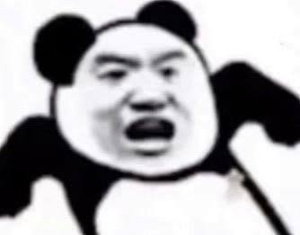

The "Panda Head" meme is primarily active in China;
it originated from an Egyptian advertising campaign titled
"Never Say No to Panda."

Classic meme templates consist of simple black-and-white line drawings of a panda's body,
with the face replaced by the highly expressive—and often distorted—visages of real people,
celebrities, or anime characters.
These memes are widely used in everyday chats. (such as on WeChat or QQ)